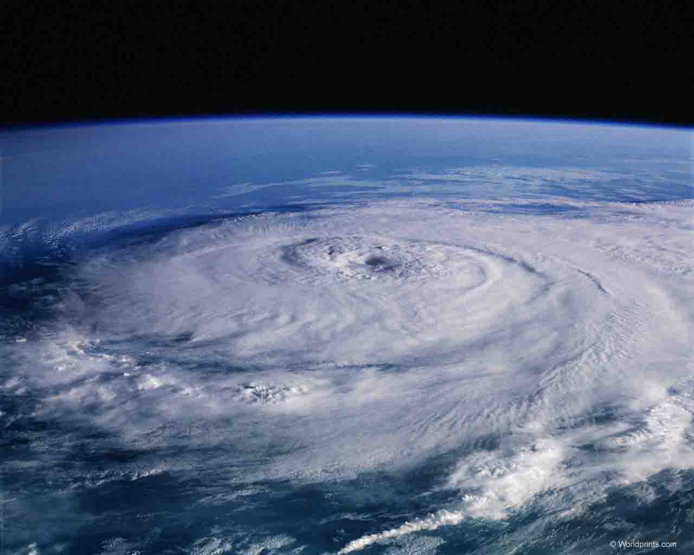
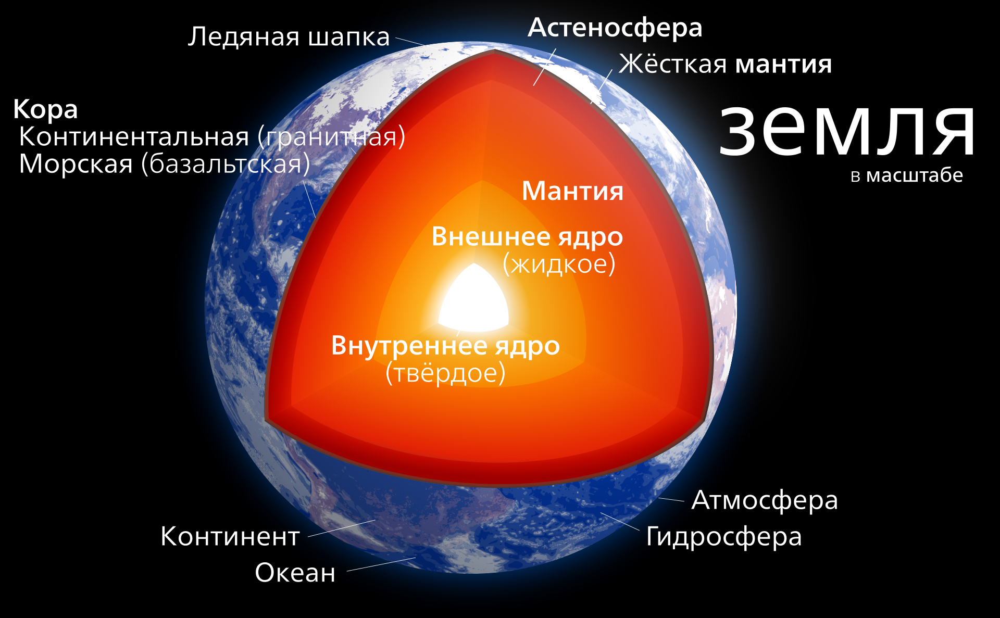
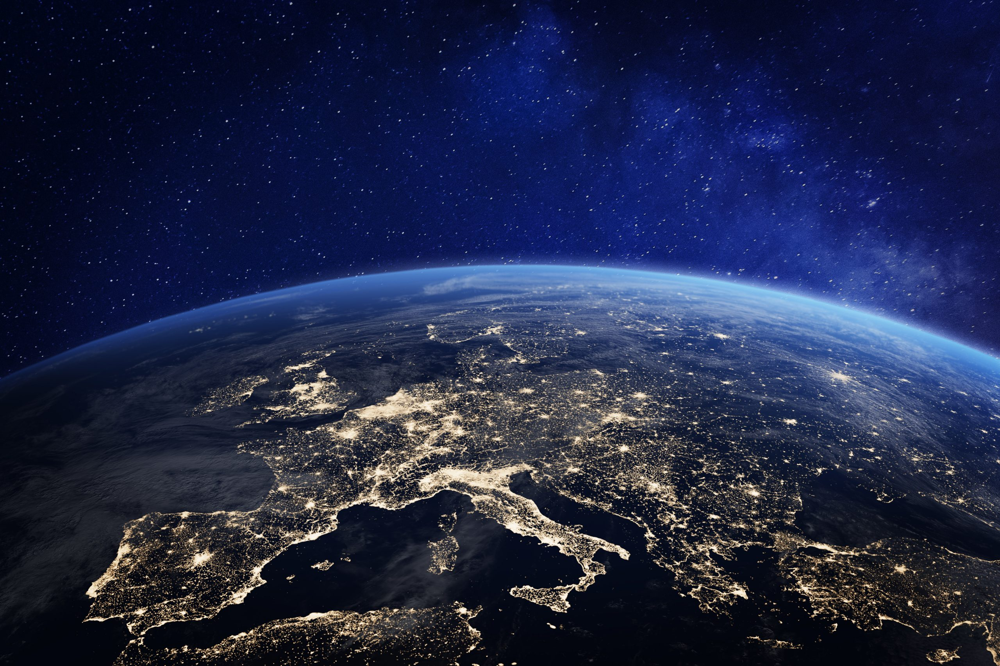
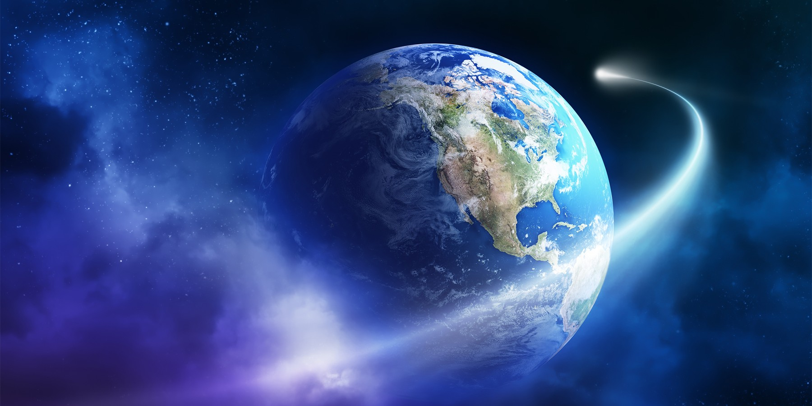
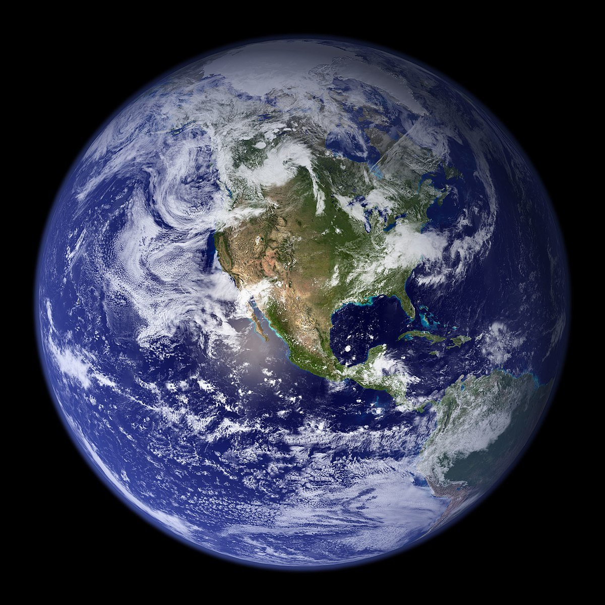

Земля является третьей планетой от Солнца и самой большой из планет земной группы. При этом она всего лишь пятая по величине планета с точки зрения размера и массы в Солнечной системе, но, что удивительно, самая плотная из всех планет в системе (5,513 кг/м3). Примечательно также, что Земля является единственной планетой в Солнечной системе, которую сами люди не называли в честь мифологического существа, — ее название происходит от старого английского слова «ertha», что означает почву.
Считается, что Земля образовалась где-то около 4.5 миллиарда лет назад, а в настоящее время является единственной известной планетой, где возможно существование жизни в принципе, а условия таковы, что жизнь в буквальном смысле кишит на планете.
На протяжении всей истории человечества люди стремились понять свою родную планету. Тем не менее, кривая обучения оказалась очень и очень сложной, с большим количеством ошибок сделанными по пути. Например, еще до существования древних римлян, мир понимался как плоский, а не сферический. Вторым наглядным примером является вера в то, что Солнце вращается вокруг Земли. Лишь только в шестнадцатом веке, благодаря работе Коперника, люди узнали, что на самом деле Земля просто планета, вращающаяся вокруг Солнца.
Возможно, самым главным открытием относительно нашей планеты в течение последних двух столетий является то, что Земля является как обычным так и уникальным местом в Солнечной системе. С одной стороны, многие из ее характеристик довольно заурядны. Возьмем, например, размер планеты, ее внутренние и геологические процессы: ее внутренняя структура практически идентична трем другим планетам земной группы в Солнечной системе. На Земле происходят практически те же геологические процессы, формирующие поверхность, которые свойственны подобным планетам и многим планетарным спутникам. Однако при всем при этом, Земля обладает просто огромным количеством абсолютно уникальных характеристик, которые разительно отличают ее от практически всех известных на сегодняшний день планет земной группы.

Атмосфера Земли
×
Одним из необходимых условий для существования жизни на Земле без сомнения является ее атмосфера. Она состоит из примерно 78% азота (N2), 21% кислорода (О2) и 1% аргона. Также в составе есть совсем незначительное количество двуокиси углерода (CO2) и других газов. Примечательно, что азот и кислород необходимы для создания дезоксирибонуклеиновой кислоты (ДНК) и производства биологической энергии, без которой невозможно существования жизни. Кроме того, кислород присутствующий в озоновом слое атмосферы, защищает поверхность планеты и поглощает вредное солнечное излучение.
Любопытно то, что Значительное количество кислорода, присутствующего в атмосфере, создается на Земле. Образуется он в качестве побочного продукта фотосинтеза, когда растения превращают углекислый газ из атмосферы в кислород. По существу, это означает, что без растений количество углекислого газа в атмосфере было бы гораздо выше, а уровень кислорода значительно ниже. С одной стороны, если уровень углекислого газа повысится, вполне вероятно, что Земля будет страдать от парникового эффекта как на Венере. С другой стороны, если процентное содержание углекислого газа станет даже немного ниже, то уменьшение парникового эффекта привело бы резкому похолоданию. Таким образом, текущий уровень углекислого газа способствует идеальному диапазону комфортных температур от -88 °С до 58 °С.

Структура планеты Земля
×
Подобно другим планетам земной группы, Земля состоит из трех компонентов: ядра, мантии и коры. В настоящее наука уверена, что ядро нашей планеты состоит из двух отдельных слоев: внутреннее ядро из твердого никеля и железа и наружного сердечника из расплавленного никеля и железа. При этом мантия представляет собой очень плотную и почти полностью твердую силикатную породу, — ее толщина составляет примерно 2850 км. Кора также состоит из силикатных пород и разница по своей толщине. В то время как континентальные диапазоны коры составляют от 30 до 40 километров в толщину, океаническая кора намного тоньше, — всего от 6 до 11 км.
Еще одна отличительная черта Земли относительно других планет земной группы это то, что ее кора делится на холодные, жесткие плиты, которые опираются на более горячую мантию, расположенную ниже. Кроме того, эти пластины находятся в постоянном движении. Вдоль их границ как правило осуществляется сразу два процесса, известных как субдукция и спрединг. Во время субдукции две пластины вступают в контакт производя землетрясения и одна пластина наезжает на другую. Второй процесс представляет собой разделение, когда две пластины отходят друг от друга.

Поверхность Земли
×
Не смотря на то, что большая часть поверхности Земли расположена под ее океанами, «сухая» поверхность имеет много отличительных черт. При сравнении Земли с другими твердыми телами в Солнечной системе, ее поверхность разительно отличается, так как на ней нет кратеров. По мнению планетологов, это не говорит о том, что Земля избежала многочисленных ударов малых космических тел, а скорее указывает на то, что доказательства подобных воздействий были стерты. Возможно существует множество геологических процессов, ответственных за это, но ученые выделяют два наиболее важных — выветривание и эрозия. Считается, что во многом именно двоякое воздействие данных факторов повлияло на стирание с лица Земли следов от кратеров.
Так выветривание ломает поверхностные структуры на более мелкие куски, не говоря уже химических и физических способах атмосферного воздействия. Примером химического выветривания являются кислотные дожди. Пример физического выветривания — истирание русел рек, вызванное породами, содержащимися в проточной воде. Второй же механизм — эрозия, по своей сути является воздействием на рельеф движением частиц воды, льда, ветра или земли. Таким образом, под воздействием выветривания и эрозии, были «стерты» ударные кратеры на нашей планете, за счет чего были образованы некоторые особенности рельефа.
Наклон оси Земли составляет приблизительно 23,45 °. При этом Земле требуется двадцать четыре часа для того, чтобы завершить один оборот вокруг своей оси. Это самое быстрое вращение среди планет земной группы, но немного медленнее, чем у всех газовых планет.

Орбита и вращение Земли
×
Земле требуется примерно 365 дней для того, чтобы сделать полный оборот по орбите вокруг Солнца. Длина нашего года связана в значительной степени со средним орбитальным расстоянием Земли, которое составляет 1,50 х 10 в степени 8 км. При таком орбитальном расстоянии солнечному свету требуется в среднем около восьми минут и двадцати секунд для достижения поверхности Земли.
При орбитальном эксцентриситете .0167 орбита Земли является одной из самых круговых во всей Солнечной системе. Это означает, что разница между перигелием Земли и афелием относительно мала. В результате столь небольшой разницы интенсивность солнечного света на Земле остается практически неизменной круглый год. Тем не менее, положение Земли на своей орбите определяет тот или иной сезон.
Планетологи объясняют наличие на Земле океанов двумя причинами. Первой из них является сама Земля. Существует предположение, что во время формирования Земли атмосфера планеты смогла захватить большие объемы водяного пара. Со временем, геологические механизмы планеты, в первую очередь ее вулканическая активность, выпустила этот водяной пар в атмосферу, после чего в атмосфере,этот пар сконденсировался и упал на поверхность планеты в виде жидкой воды. Другая версия предполагает, что источником воды были кометы, которые падали на поверхность Земли в прошлом, лед который преобладал в их составе и образовал существующие на Земле водоемы.

Океаны Земли
×
При наблюдении Земли из космоса, первое что бросается в глаза — океаны жидкой воды. С точки зрения площади поверхности, океаны покрывают примерно 70% от Земли, что является одним из уникальнейших свойств нашей планеты.
Подобно атмосфере Земли, наличие жидкой воды является необходимым критерием для поддержания жизни. Ученые полагают, что впервые жизнь на Земле возникла 3,8 миллиарда лет назад и именно в океане, а возможность передвигаться по суше появилась у живых существ намного позже.